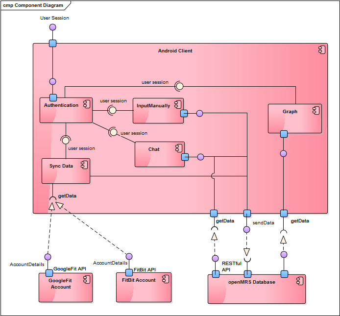

The component diagram provided illustrates the pieces of software, embedded controller, etc. that make the system. Assembly connectors “link” the provided interfaces supplied by the android client’s authentication page to the required interfaces specified by the chat, sync data and manually input pages. All those three pages communicate with the openMRS database via a restful API. Similarly, the android client will get the data from the GoogleFit app and from the FitBit smartwatch via the GoogleFit API, respectively FitBit Api.
The class diagram shows the building blocks of any object-orientated system. Class diagrams depict a static view of the model, or part of the model, describing what attributes and behavior it has rather than detailing the methods for achieving operations. Class diagrams are most useful in illustrating relationships between classes and interfaces. Generalizations, aggregations, and associations are all valuable in reflecting inheritance, composition or usage, and connections respectively.
A class is an element that defines the attributes and behaviors that an object is able to generate. The behavior is described by the possible messages the class is able to understand, along with operations that are appropriate for each message. Classes may also have definitions of constraints, tagged values and stereotypes.
Classes are represented by rectangles which show the name of the class and optionally the name of the operations and attributes. Compartments are used to divide the class name, attributes and operations.
Activities package
Adapters package
Application package
Bundle package
Dao package
Databases package
Models package
Net package
Utilities package
A sequence diagram is a form of interaction diagram which shows objects as lifelines running down the page, with their interactions over time represented as messages drawn as arrows from the source lifeline to the target lifeline. Sequence diagrams are good at showing which objects communicate with which other objects; and what messages trigger those communications. Sequence diagrams are not intended for showing complex procedural logic.
The following diagram shows how a food item search activity is done via the android client.
The following diagram illustrates how the FitBit authentication is done as well as how the synchronisation with the android client is done.
The following diagram shows how the chat messaging process is being completed, how the connection between the patient and doctors is done and how the messages are being saved to the OpenMRS server
In UML, an activity diagram is used to display the sequence of activities. Activity diagrams show the workflow from a start point to the finish point detailing the many decision paths that exist in the progression of events contained in the activity. They may be used to detail situations where parallel processing may occur in the execution of some activities. Activity diagrams are useful for business modelling where they are used for detailing the processes involved in business activities.
The following sequence diagram shows how the login activity is being done taking into consideration both cases when the user is an already registered patient or not.